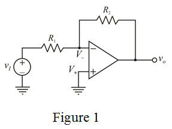

Write the expression for closed loop gain of the inverting amplifier.

Closed loop gain is greater than unity, so  will have maximum resistance value as compared to
will have maximum resistance value as compared to  .
.
Therefore, the value of resistance, is  .
.
Write the expression for closed loop gain of the inverting amplifier.
Closed loop gain is greater than unity, so will have maximum resistance value as compared to .
Therefore, the value of resistance, is .
Inverting op-amp circuit with node voltages is in Figure 1.

Determine the open loop gain of the amplifier.
From Figure 1, .
Write the expression for open loop gain.
Determine the closed loop gain of the op-amp.
Apply Kirchhoff’s current law at inverting terminal.
Substitute for and for in the equation.
Therefore, the smaller resistor,  is .
is .
Consider that an unknown resistor  is shunted with resistor and this parallel combination should satisfy the designing constraints.
is shunted with resistor and this parallel combination should satisfy the designing constraints.
Therefore, the resistor connected to  resistor in parallel is .
resistor in parallel is .